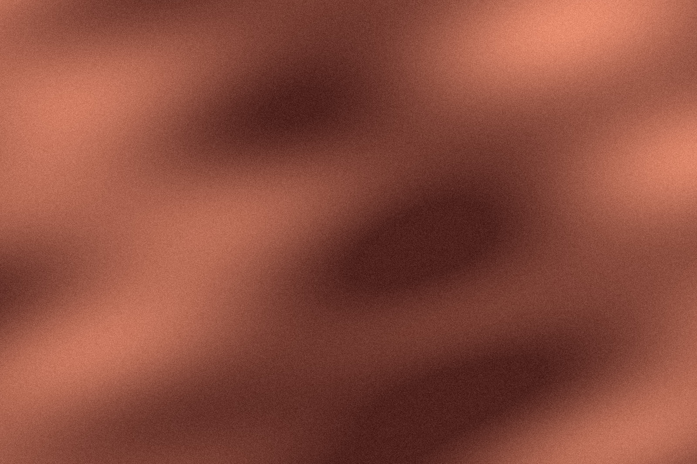

Origen trazable
Cada lote indica finca, altura y proceso de lavado, secado o natural.
Trabajamos con pequeños productores y tostamos en lotes de 12 kg para que cada taza llegue en su mejor punto.
Ver los cafésCada lote indica finca, altura y proceso de lavado, secado o natural.
Tostamos cuando haces el pedido, no antes. Sin stock envejecido en el almacén.
Embalaje compostable y válvula de desgasificado para conservar el aroma.

Recibe cada mes un café distinto elegido por nuestro equipo de catadores.
Empezar